Demande de décision anticipée (classement, origine, valeur)
Sources : CDII, art. 45 ter ; décret n° 2-77-862, art. 216 bis ; circulaires série 232 (2026) · Paragraphe lié : n° 2-060
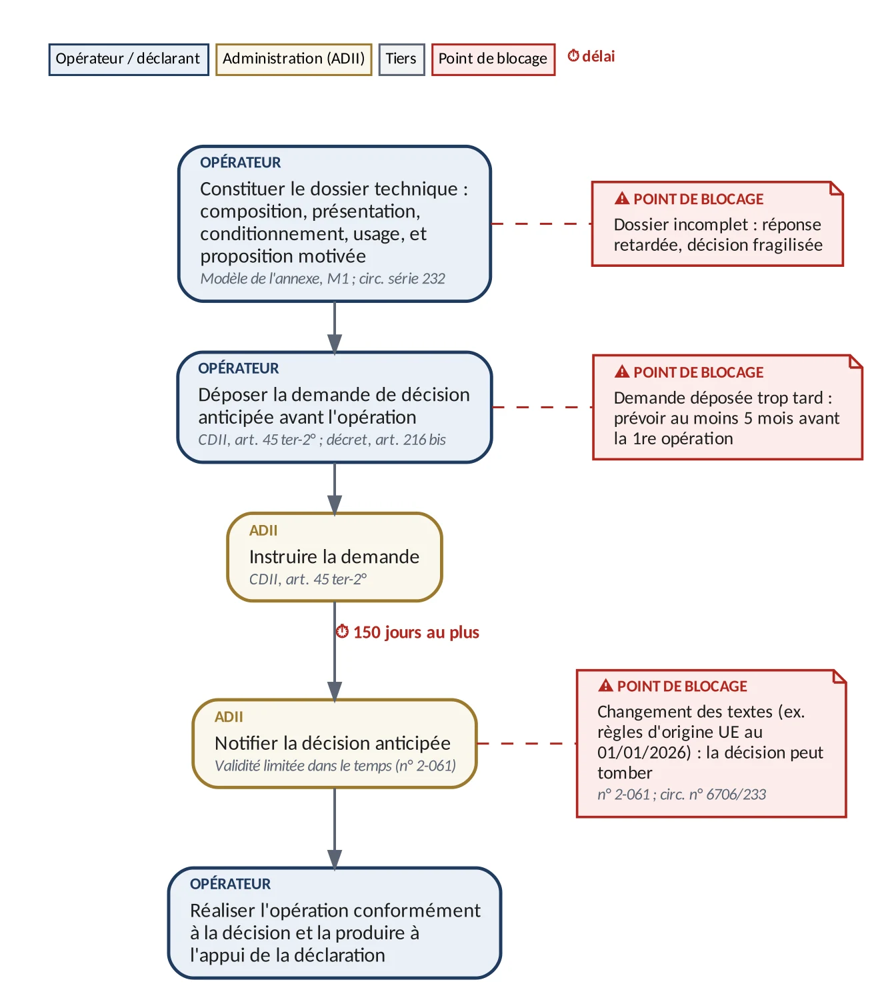
Sources : CDII, art. 45 ter ; décret n° 2-77-862, art. 216 bis ; circulaires série 232 (2026) · Paragraphe lié : n° 2-060

Sources : CDII, art. 49, 57, 79 bis, 80, 89, 93, 95, 100, 101 et 106 ; circ. n° 6369/312 et 6456/412 · Paragraphe lié : n° 3-033
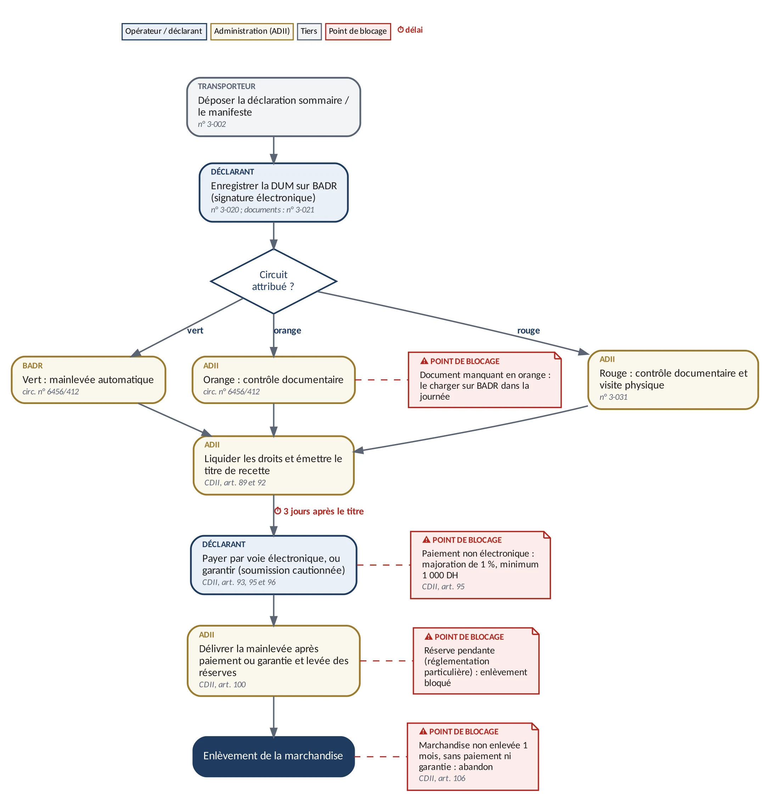
Sources : CDII, art. 22 bis, 22 ter, 80-2°, 81-2° et 86-3° ; circulaire conjointe n° 1 ; circ. conjointe n° 6583/214 · Paragraphe lié : n° 3-034
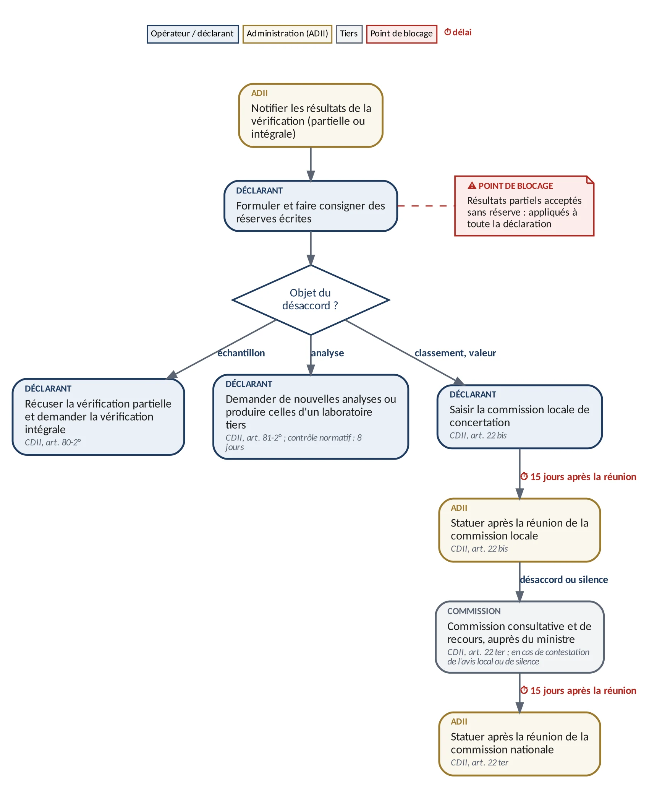
Sources : CDII, art. 49, 57, 66-2° et 100 ; arrêté n° 3414-12 ; arrêté n° 1318-77 mod. par l'arrêté n° 1640-22 ; circ. n° 6369/312 · Paragraphe lié : n° 3-041
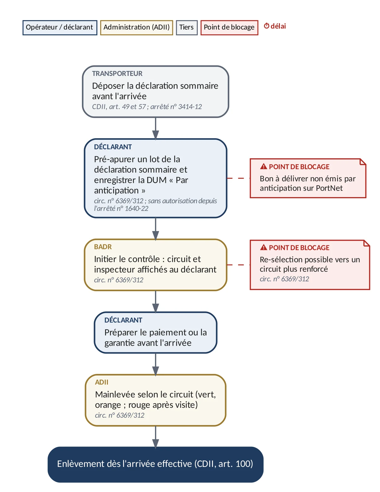
Sources : CDII, art. 96, 97 et 101 ; décret n° 2-77-862, art. 63, 64, 64 bis et 65 · Paragraphe lié : n° 4-041
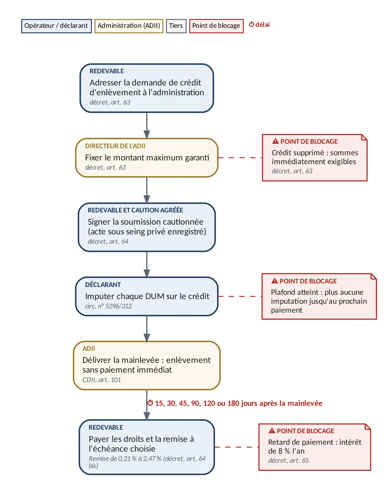
Sources : CDII, art. 78-2°, 78 bis, 95 bis, 97 et 99 quinquies ; circ. n° 6619/210 (LF 2025) · Paragraphe lié : n° 4-043
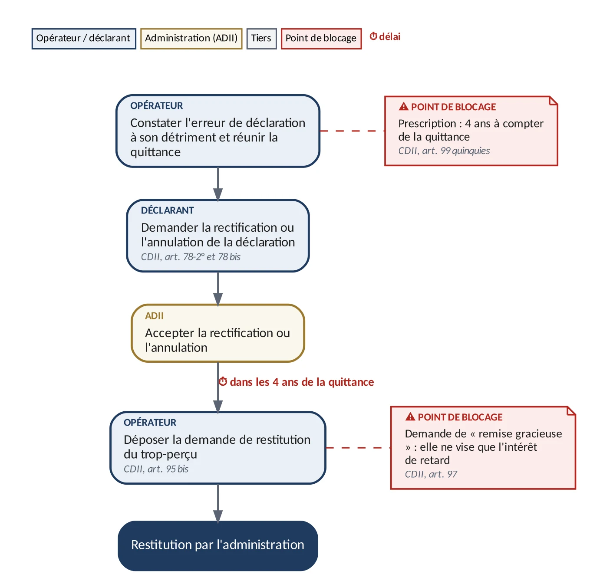
Sources : CDII, art. 155 à 158, 285-7°, 287 et 287 bis ; décret n° 2-77-862, art. 163 à 172 ; circ. n° 5934/300 et 6636/312 · Paragraphe lié : n° 6-001
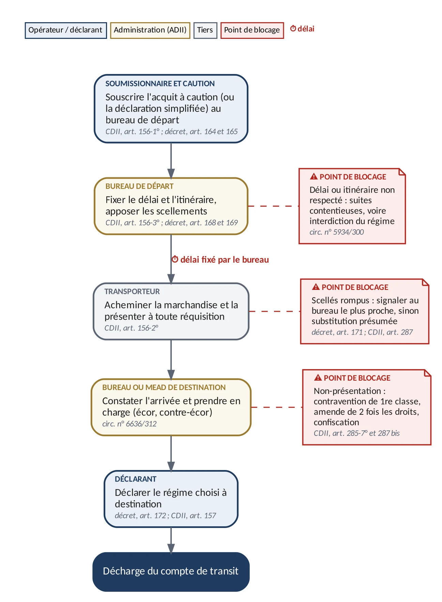
Sources : CDII, art. 116 à 117 ; décret n° 2-77-862, art. 104, 107 et 108 ; circ. n° 6164/313, 6538/313, 6052/300 et 5458/313 · Paragraphe lié : n° 7-004
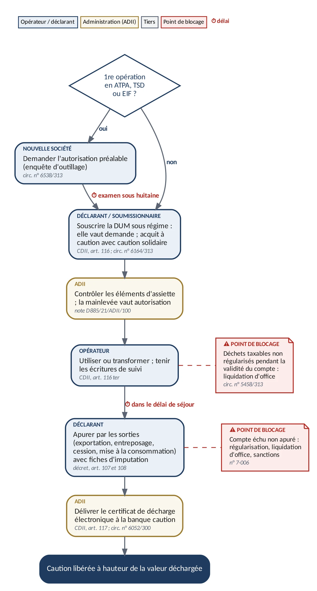
Sources : CDII, art. 160 à 163 ; décret n° 2-77-862, art. 173-2° ; arrêté n° 840-21 ; circ. n° 6231/313 · Paragraphe lié : n° 7-061
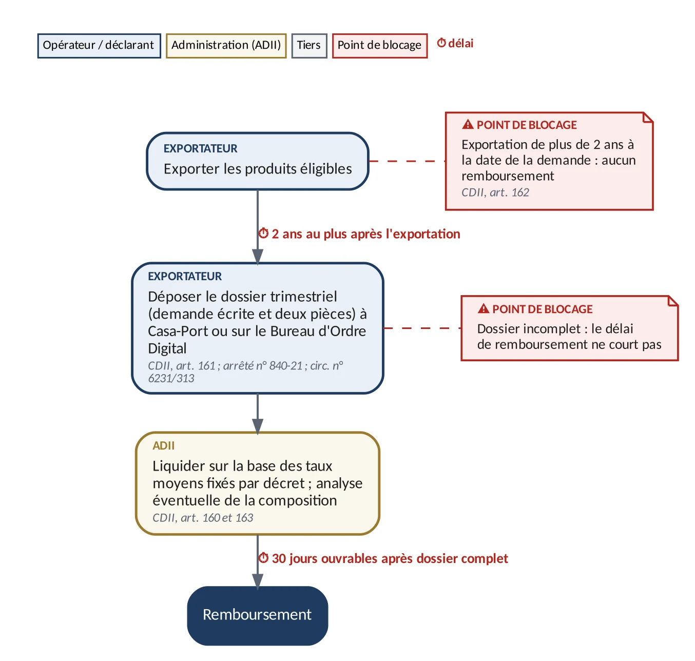
Sources : Décret n° 2-77-862, art. 53 ter ; circ. n° 5517/313, 6114/300 et 6364/313 ; brochure ADII « Le statut d'OEA » (2023) · Paragraphe lié : n° 8-003
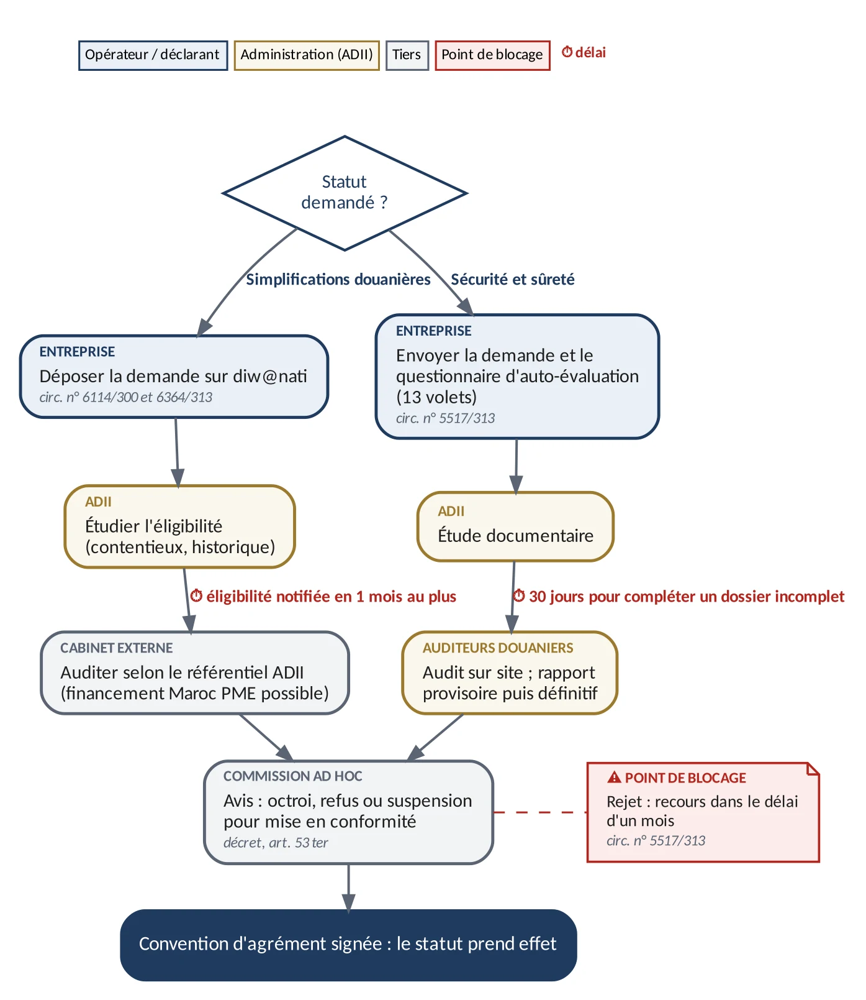
Sources : CDII, art. 42, 78-3°, 86 bis, 88 bis-2°, 99 bis et 99 ter ; décret n° 2-77-862, art. 74 et 74 bis · Paragraphe lié : n° 9-003
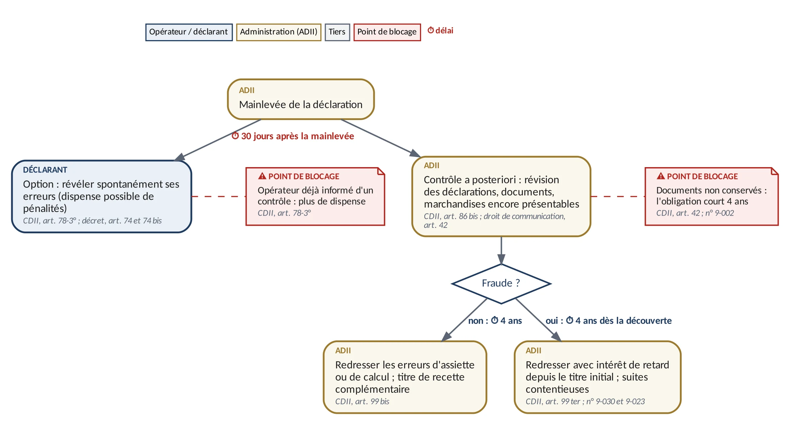
Sources : CDII, art. 240, 242, 249, 252 et 273 à 276 ; circ. n° 6522/210 (LF 2024) · Paragraphe lié : n° 9-030
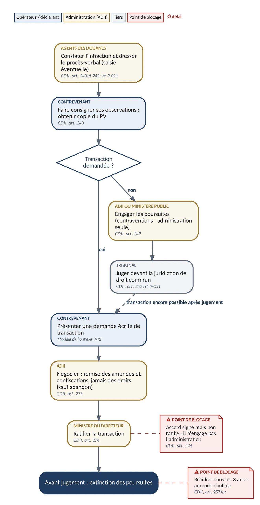
Sources : CDII, art. 22 bis, 22 ter, 22 quater et 99 bis-2°-c ; arrêté n° 1067-00 ; circ. n° 5517/313 et 5655/312 · Paragraphe lié : n° 9-050
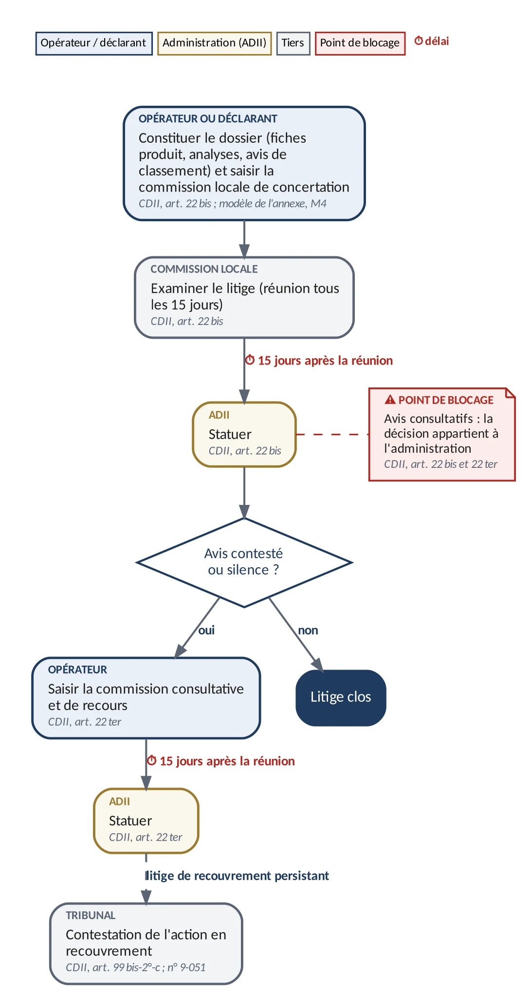